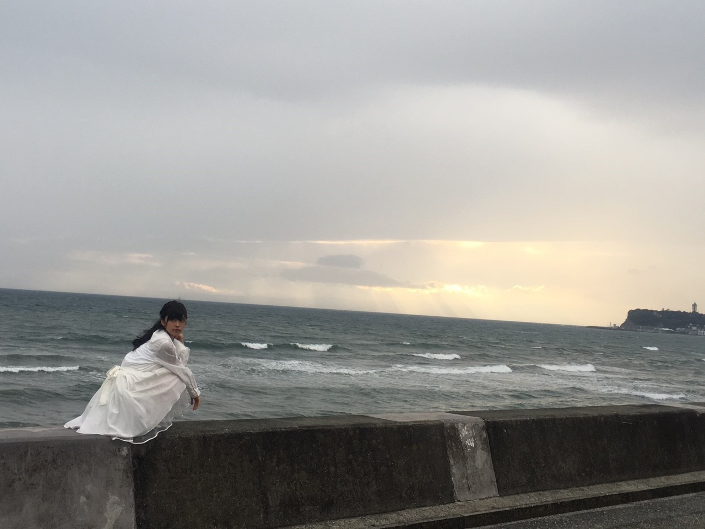

2015/1231Thu2白LI羽 −
あけましておめでとうございますの前に
更新したくて
紅白歌合戦
ありがとうございました
これについては
連載してます
Newsとまらんぜにて
書きますのでそちらを見て下さい！
まず、今年もありがとうございました
今年は本当にあっという間に感じましたどのくらいあっという間だったかと言いますと新幹線で意外と遠いだろうなーっと思っていた新大阪に寝てたらあっという間やんっと言うくらいあっという間でした。
が振り返ると濃ゆいもので
何とも難しいですが
長いような
でも感覚的には本当に短い1年でした。
そんな2015年
何が1番でかかったですかと言われると
やはり、BirthdayLIVEの
昇格発表でした
もうそろそろで昇格1年が経つんですが
意外にまだ1年も経っていないという
恐ろしいw(:_;)w
やっぱり
昇格して改めて思いますが
研究生という言葉1つで
全く見る世界が違いました。
認めたくなかったし
自分も奮い立たせるため
「研究生」なんて
文字、肩書だけ気にするなって思っていましたが
やっぱり
「研究生」だから
「研究生」どこに行ってもこの言葉に縛られている気がして嫌です。
早く大きくなりたいです。
でも、この時代が1番長かったからこそ
今何事にも感謝できるし
向上心もお邪魔になってないか心配なくらいたっぷりでお仕事とかできます。
正直、テラダはもともとの
スキル才能がないので
まだまだな人間ですが
来年2016年は
「自信をもって高野豆腐並にいろいろ吸収したいです。そして大きくなりたいです。身長の方も大きくなりたいです。」
あと、うざいくらい不器用で真っ直ぐいきたいです
もう、短所でもありますが
逆に長所にしていきたいですこの良くも悪くも折れないところを。
面倒くさい人間ですが
宜しくお願い致します。
2015年の目標に
雑誌にたくさん出たいっとブログで公言していて
それから
今年の後半は本当に
ありがたい事に
沢山出させて頂きました。
今までの私には
想像のつかない事でした
ファンの方や家族にも
今までの3年間くらいは
あれに出ますこれにでますとか
告知もできなかったし
私自身もそうでしたが
悔しかったり悲しい想いをさせてたかもしれません
でも、現時点でも
昔の自分に比べれば
良くなっているかもですが
目指すところはもっと
遥か上です、、、
最近、握手会なので
「らんぜが遠くに行っちゃったーヤダ」
とか言われたりしますが
全然だし
ほんとこの言葉はまだまだ私には似合わないし何よりも言われたくありません。
これから恩返ししたいし
これから一緒に付いてきてくれる人が増えるよう
自分も努めて参ります。
いつも思うのですが
文にすると伝わってるか心配だなw(:_;)w
相手がどういう気持ちでこの文を読むのかによって
良くも悪くも捉えられるからw(:_;)w
ｰｰｰｰｰｰｰｰｰｰｰｰｰｰｰｰｰｰｰｰｰｰｰｰｰ
他にも
昇格してから
乃木坂の楽曲に参加出来たこと
もちろん、他にも
大きい事から小さな出来事まで沢山ありました
最近の話だと
サンクエトワールでの活動
5人だけでイベントやらせて頂いたり
そのユニットのおかげで
ラジオの楽しさに気づかせてもらったし
サンクエトワールの中だと私が1番年下なうえに
経験値も1番したからのスタートで何もかも始めてな事が多かったですし
自信ないし
もう、色々ご迷惑おかけしてるかもなんですが
ユニットが始まってから数ヶ月だけでも
沢山の初めてを経験して
学びました。
4人には感謝します。
やっぱり文じゃ伝わってない気がするよw(:_;)w
はい。
文じゃ伝わらないなら
直接皆様に
2016年は
テラダ成長したなって
肌で実感してほしい。
？？
ｰｰｰｰｰｰｰｰｰｰｰｰｰｰｰｰｰｰｰｰｰｰｰｰｰ
頭の中10だとしたら
9.7%くらい乃木坂な
テラダですが、、、
残りは衣食住( ˙-˙ )
大きな事言いますが
乃木坂46の為に頑張りたいしそしたら目標にも近づくし努力っていい事だし
相変わらず
まとまりのないブログにはなりましたが
皆様
今年も宜しくお願い致します
そして、テラダの合言葉
安心安全が第一
最後は気持ち！！！
以上、寺田蘭世でした
ヤングガンガンさんにて
またオフショットブログは年明けてからね
書きます\( ö )/

初日の出みたいですね
2015/12/31 21:36


コメント(1048)
よいお年を
紅白みたよー
かわいかった٩(๑′∀ ‵๑)۶•*¨*•.¸¸♪
来年も頑張ってね
そして1年間お疲れ様でした！
来年こそは会いに行きます‼︎
お疲れ様！！！
やっぱり君の名は名曲だね！
最高だったよ！！！
めっちゃ感動した！
来年も応援してるね！
サンクエトワール♪
また来年も、なんかあればいいなぁ！
たのしみー！！！！
来年もよろしくぅー！
泣いてしまったよ(;つД｀)
37人全員で出れてよかったねっ！
また来年もらんぜの勢いとまらんぜ！
もう少しでカウントダウンだね！
来年も頑張ってね！
蘭世がテレビで映った時叫んだわww可愛すぎ！！
あと少しで今年も終わりー
来年もよろしくね！全握いきます！
蘭世の勢いとまらんぜ
お疲れ様でした
めちゃくちゃ良かったよ！
今年一年めちゃくちゃ良かったよ！
来年も勢いとまらんぜで頑張って！
紅白見たよ！❤︎かわいさが爆発してたよ◎
来年もよろしくね((o(＊˘ω˘＊)o))
良いお年を！！！
2016年もらんぜのいきおいとまらんぜ！
世界中へピース
紅白らんぜちゃん見つけたよ！！！
可愛かった今年はありがとう
また読んだらコメントかきます！！！！
今年は本当にありがとう^_^
乃木坂のおかげでとても充実した1年間だったp(^_^)q
去年の夏に乃木坂にハマり、蘭世が2月に正規メンバーに昇格して、蘭世の姿をたくさん見れて本当に良かったp(^_^)q
来年も蘭世の勢いとまらんぜ！！！
じゃ、良いお年を〜*･゜ﾟ･*:.｡..｡.:*･'(*ﾟ▽ﾟ*)'･*:.｡. .｡.:*･゜ﾟ･*
全部じゃないけどちゃんと伝わってる。
昇格も今年だもんね。
バスラ、感動した。
来年は飛躍！！！！！
今年は紅白含めて蘭世にとってもファンにとっても色々なことがあった1年だったよね！
自分もメンバーの色々な魅力をライブやテレビで感じることができて、これからも推していこうと思いました！
2016年も頑張ってね！
蘭世が輝く姿を期待してます！！
来年もとま蘭世
さらなる飛躍を来年期待しておりまする
蘭世を2016年も応援するね！
蘭世推しになって歴は浅いけど気持ちは負けない∩(´；ヮ；｀)∩
僕も来年は頑張るぞ！
良いお年を！
ちゃんと見つけたよ！！
来年もまた紅白に出て今度はフロントにたってる蘭世がみれるように応援するね！
今年一年お疲れ様でした！
来年は今年以上にいい年になるといいね！！！
蘭世の勢いとまらんぜ！！！
すごいよ、紅白
確かにあの人数で4列目？かな？
そこで1人で抜かれるのは難しいかもしれへん
でも乃木坂46として紅白の舞台に立ててファンみんなうれしいよ
とても可愛かったです！
来年も頑張らんぜ！
紅白歌合戦お疲れ様！！
蘭世ちゃんと映ってたよ！！ちゃんとみたよ！録画もしたよ！！
ステージからの景色はどうだったかな？
2015年は蘭世とチェキ会でチェキ撮れたり、たくさん握手もできたし認知もしてもらえたし充実してた！
2016年も一緒に頑張ろう！！
今年一年おつかれさまでした！
昇格発表された瞬間は西武ドームで僕も見ていて涙がとまりませんでした。
「研究生」という言葉による縛りを解放してからというもの蘭世の勢いは爆発しましたね。
2016年は心も体もスキルも大きくなっていくことができるように僕も全力で応援していきます。
乃木坂に全力になる蘭世が好きです。
では！
握手会でも言いましたが、よいお年を！
来年もよろしく！
初出場ってことで乃木坂全員出れてほんとよかった！
4列目からでもしっかりらんぜ映ってたよ！
あつき
コメントする